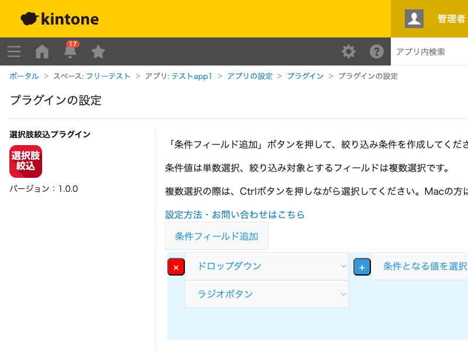

GovAppsプラグイン 安全性を確認できる無料kintoneプラグイン集
ドロップダウンやラジオボタンなど、あるフィールドの値を変更したときに、別のフィールド(ドロップダウン・ ラジオボタン・チェックボックス・複数選択)の選択肢をモーダル画面で絞り込んで表示し、選び直させるプラグインです。 「都道府県」を選んだら「市区町村」の選択肢を絞り込む、といった段階的な選択肢の親子関係を設定できます。
「都道府県」ドロップダウンの値を変更すると、「市区町村」フィールドの選択肢が該当する市区町村だけに絞り込まれたモーダルが表示され、選び直せます。条件フィールド・絞込対象フィールドの組み合わせは複数登録できます。
絞込対象フィールドがチェックボックスや複数選択の場合は、モーダル上で複数選択(Ctrl/commandキーを押しながらクリック)して選び直せます。
条件フィールドの値を変更したタイミングでのみモーダルが表示されます。既存レコードを開いただけでは動作しません。
kintoneセキュアコーディングガイドラインに沿って実装時にチェックしています。特に重要な点は次のとおりです。
innerTextで行っており、innerHTMLへの外部由来文字列の差し込みはありません。詳細な確認項目・確認日は下記GitHubのチェックリストに全項目を掲載しています。

このプラグインは設定画面を開いたときに1回だけkintone.api()でフォームフィールド一覧を取得します(kintone自身への呼び出し)。
レコード画面での絞込動作自体はローカルなJavaScript処理のみで完結し、APIは実行しません。